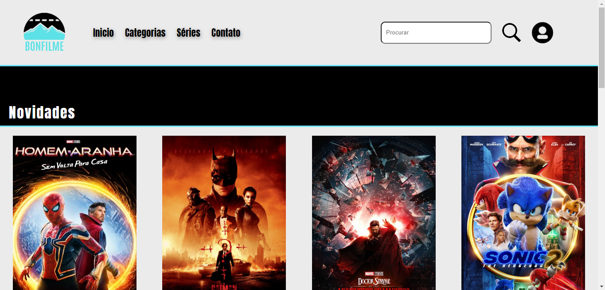
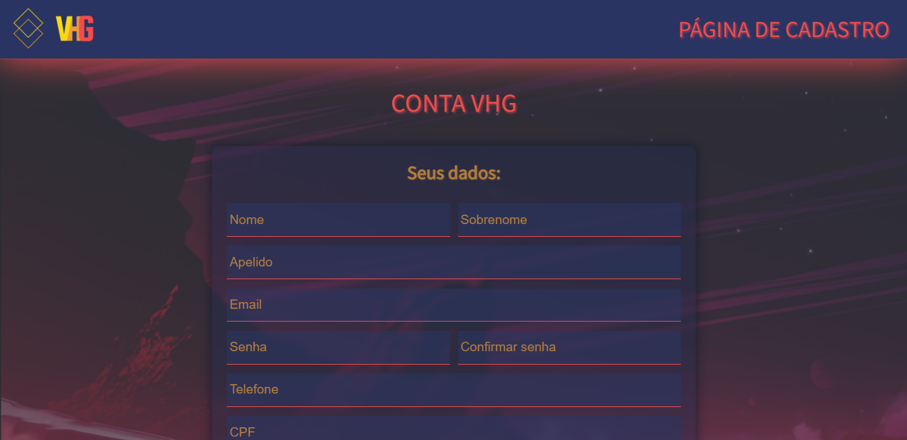
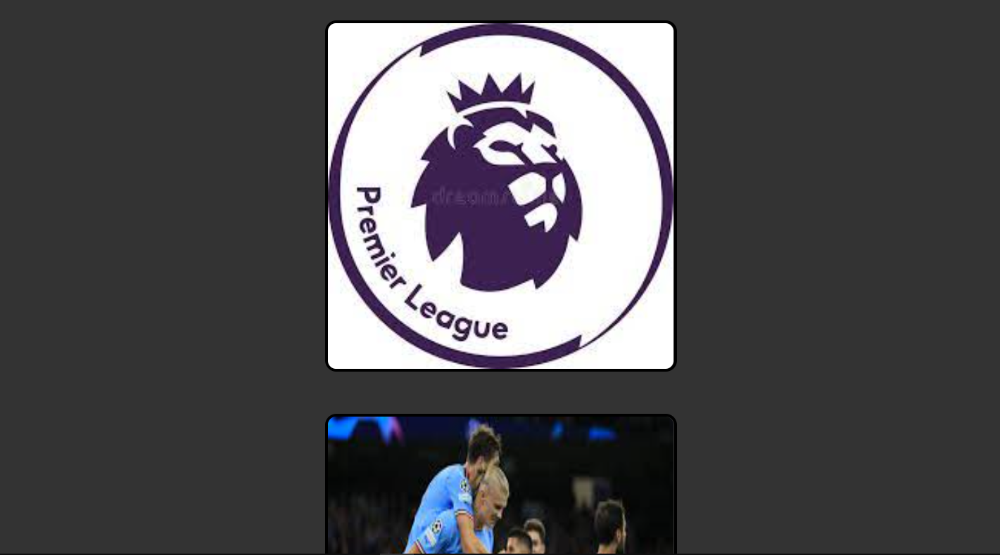

Acessar o projeto 👈
Site de filmes
Um site de filmes feito com HTML, CSS e JavaScript. Foi baseado em alguns sites da internet
Desenvolvedor(es): Vinicius Bonfleur
Acessar o projeto 👈

Acessar o projeto 👈
Formulário
Um formulário feito com HTML, CSS, JavaScript e PHP. Um projeto que foi relizado na escola com o intuito de conhecer um pouco sobre validação
Desenvolvedor(es): Vinicius Bonfleur, Giovane W. Budal, Vitor Farias Lopes e Henrique Carminatti
Acessar o projeto 👈

Acessar o projeto 👈
XHR static
Uma página de XHR feita com HTML, CSS e JavaScript. Uma página XHR de exemplo
Desenvolvedor(es): Vinicius Bonfleur
Acessar o projeto 👈